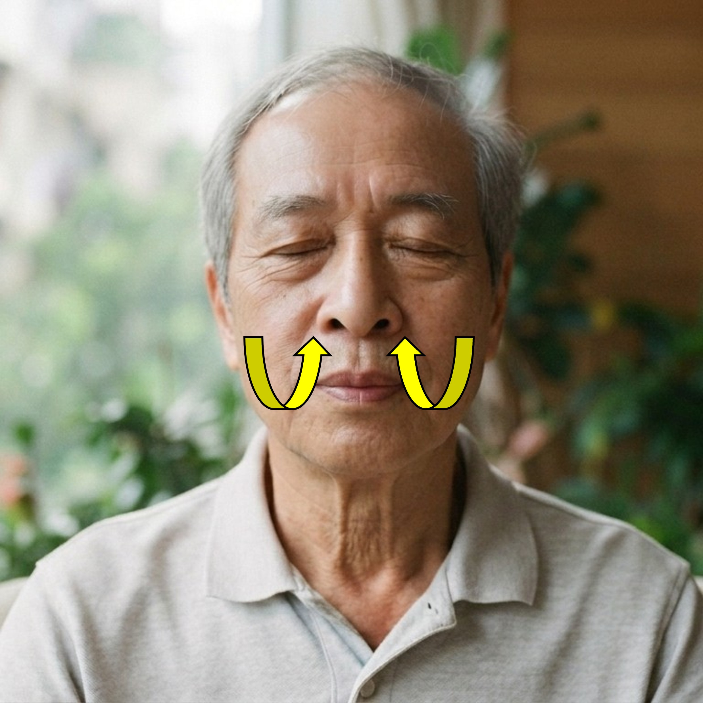
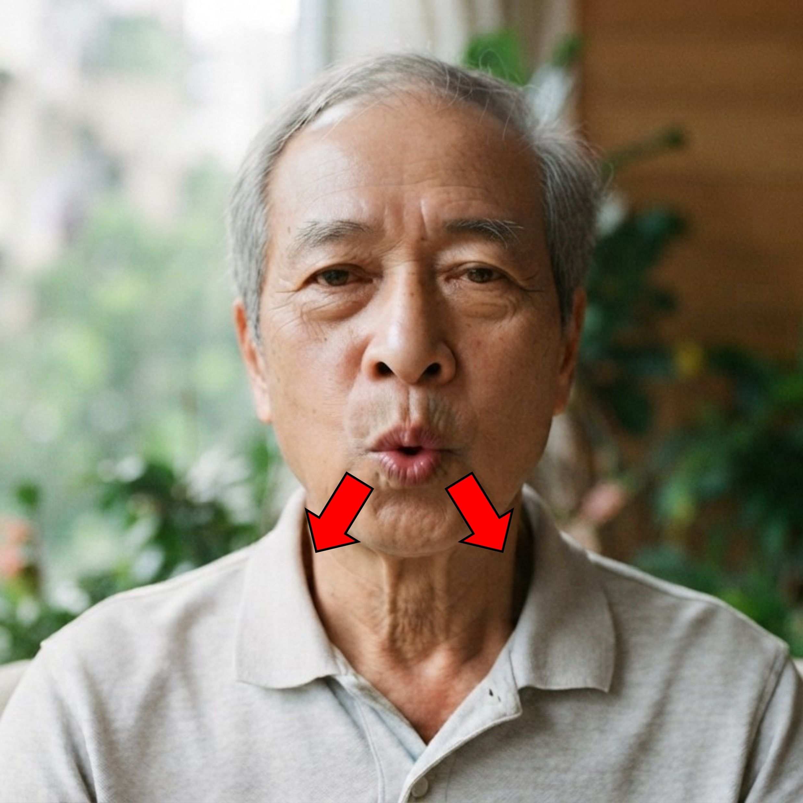

🌿 慢性阻塞性肺病 (COPD) 臨床呼吸復康系統
舒呼(SootheBreath) 呼吸復康訓練
配備五步個人化動態基準校準系統，結合節奏球與真人呼吸示範，實時計算合口吸氣、噘唇呼氣、沉肩放鬆及呼吸速率四大百分比指標。
🛡️
隱私設計保證 (Privacy-by-Design)：
所有視訊幀僅於本機瀏覽器 WebAssembly (WASM) 記憶體內即時計算，絕不錄影、絕不上傳伺服器；支援「實時鏡像模式 Mirror Mode」、「去識別化骨架網格模式 Privacy Mesh Mode」與「純引導模式 Pure Guiding Mode」。
目標 1 : 2
目標呼吸頻率 (BPM: 20 至 5)
10 BPM (次/分)
5 BPM (深度慢呼吸)
10 BPM (預設)
20 BPM (較快)
吸呼時間比例 (Ratio)：
自動換算吸氣時長
2.0 秒
自動換算呼氣時長
4.0 秒
單次循環總長: 6.0 秒 (自動換算：吸氣 2.0s / 呼氣 4.0s)
訓練總時長 (1 - 10 分鐘)
2 分鐘
1 分鐘
5 分鐘
10 分鐘
呼吸引導顯示模式：
真人示範性別選擇 (男性/ 女性)：
相機顯示模式：
步驟 1 / 5：閉嘴
五步個人化動態基準校準系統 (Therapist-Confirmed 5-Step Calibration)
1. 閉嘴
2. 張大口
3. 噘唇
4. 縮膊頭
5. 放鬆膊頭
⏳ 步驟 1/5：等待治療師確認開始
即時指標預覽 · LAR: 0.035 | jawOpen: 0.015 | D_eye: 0.220
🩺 治療師引導與確認面板
第 1 步【閉嘴】：自然閉上嘴巴
請指導病人自然坐直、閉上嘴巴，面部正對鏡頭，系統將採集個人閉口基準與雙眼間距。
採集指標：個人閉口嘴唇比 (LAR_closed)、下頜閉合基準 (jawOpen_closed)、雙眼間距 (D_eye)
等待確認
請指導病人擺好【閉嘴】動作，確認後點擊下方綠色按鈕開始 3 秒採集
✅ 五步個人化動態基準校準完成
五步個人化基準校準總結面板
系統已根據實測數據自動計算個人化閾值並同步至調試面板（可點擊單步「🔄 重測」微調）
1. 五個動作採集基準數據：
2. 自動生成之個人化動態閾值 (Dynamic Thresholds)：
吸氣階段 (閉口鼻吸)
週期: 1
剩餘: 02:00
平均呼吸頻率: 10.0 次/分
🔒 去識別化骨架網格模式 Privacy Mesh Mode
用鼻吸氣
2.0s


用鼻吸氣
2.0s
閉口由鼻吸氣 · 雙肩保持下沉
👃
合口吸氣
合格達標
100%
👄
噘唇呼氣
合格達標
100%
🧘
沉肩放鬆
合格達標
100%
🫁
呼吸速率
合格達標
100%
✅ 舒呼(SootheBreath) 呼吸復康訓練完成
臨床訓練表現摘要報告 (全程平均)
數據已於本機完成匿名化計算，不含生物特徵影像或個人識別個資。
完成循環 / 訓練時長
12 週期
總時間 02:00
平均呼吸頻率 (Mean RR)
10.0
次 / 分鐘 (breaths/min)
平均實測吸呼比 (I:E)
1 : 2.0
有效噘唇吹氣比率
噘唇呼氣達標率
92%
含 70% 呼氣柔性過渡
沉肩放鬆達標率
96%
軀幹穩定無起肩代償
綜合臨床質素評級
優秀 (A)
呼吸形態平穩達標
本機訓練歷史紀錄 (最近 10 次)
暫無本地歷史紀錄